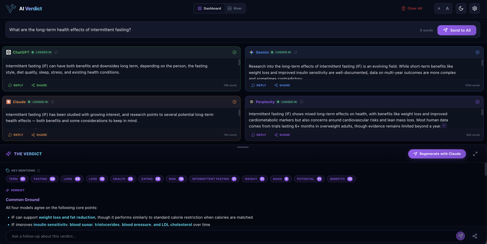
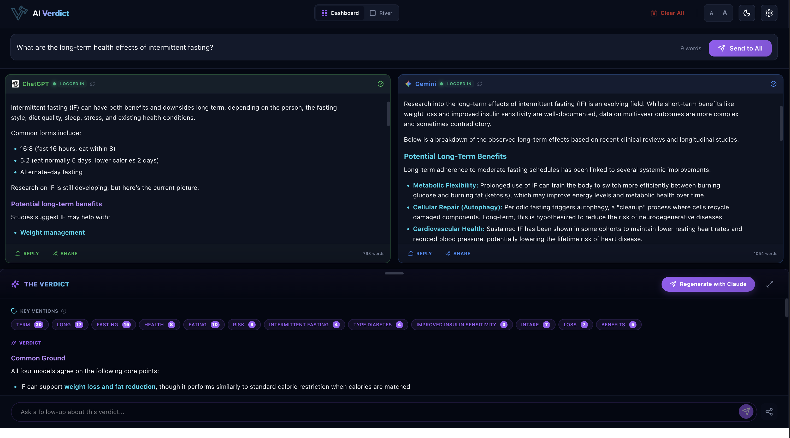
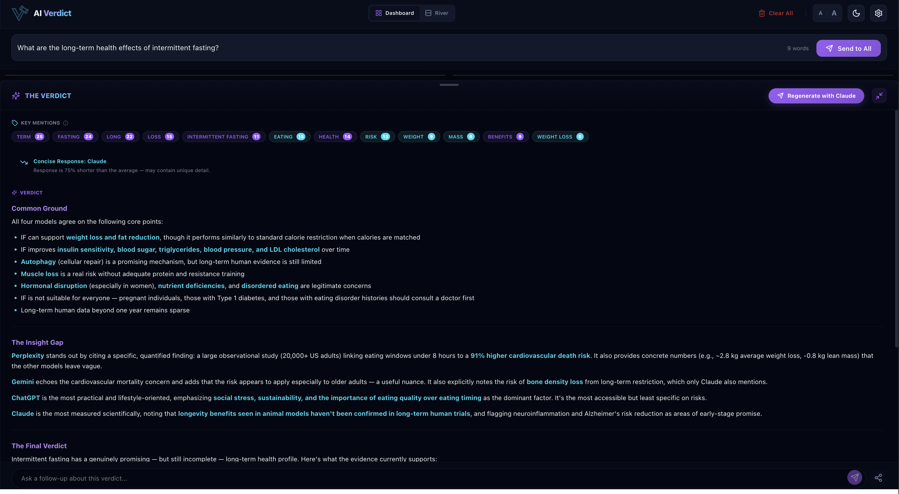
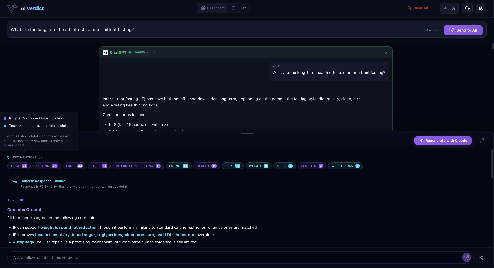
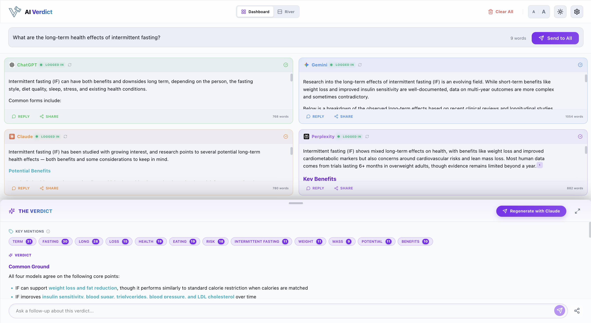
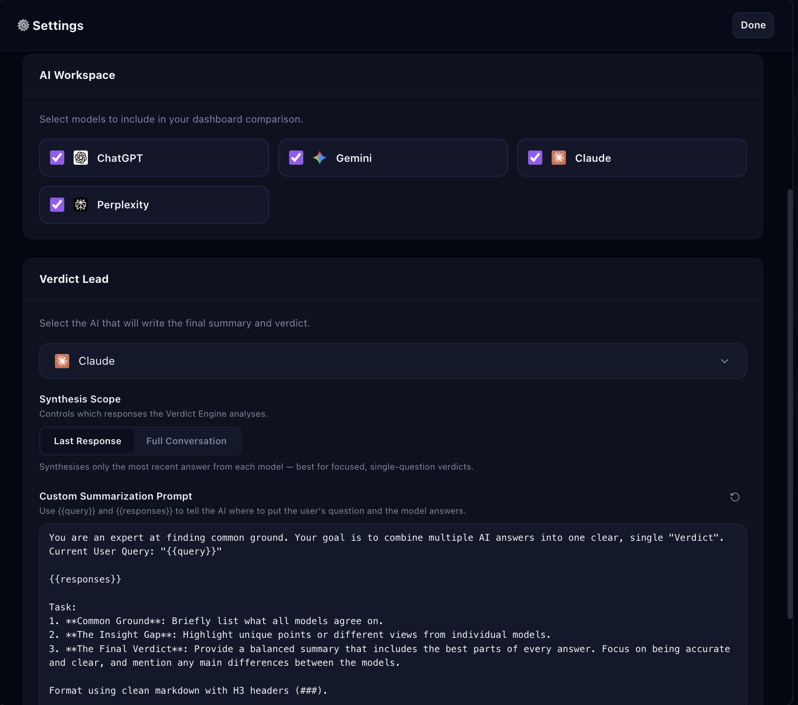

Stop switching between AI tabs. AI Verdict asks ChatGPT, Claude, Gemini, and Perplexity at the same time, then turns their answers into one clear verdict.
No API Keys Required | Uses Your Existing Accounts | One-Time Purchase

Four AI models. One prompt. Responses stream in simultaneously.

Two panels side by side — compare answers directly, then scroll down for The Verdict.

The Verdict Engine — Key Mentions, Common Ground, Insight Gap, and a Final Verdict.

River layout — read responses top to bottom for deeper comparison.

Light mode — switch themes any time with the toggle in the top bar.

Pick your models, set your Verdict Lead, and customize the synthesis prompt.
Three steps from install to insight.
ChatGPT, Gemini, and Perplexity work right away with no login needed. To use Claude or save your history, just sign into those accounts in your browser.
Ask your question once in the AI Verdict panel. It sends your prompt to all active models simultaneously. You watch all responses stream in at the same time, in one place.
See responses side-by-side and instantly spot where models agree or contradict each other. Pro users can trigger The Verdict Engine for a synthesized consensus that highlights the most reliable answer.
Free tier: ChatGPT and Gemini. Pro: all four models plus The Verdict Engine.
Built for people who take their AI research seriously. One interface, all your models, zero tab-switching.
Query multiple AI models simultaneously. No copying, no switching tabs, no repetition.
Free: ChatGPT and Gemini · Pro: all four
Watch your active models generate responses live, side-by-side as they stream in. No waiting for one to finish before seeing the next.
One AI synthesizes all four responses into a single consensus, surfacing agreement, disagreement, and the most reliable answer.
Pick which AI generates the verdict. Trust the model you trust most to deliver the final synthesis.
Write your own verdict instructions. Ask for a structured comparison, a pros and cons list, a recommendation, or a devil's advocate view.
Uses your existing browser sessions. If you already use these AIs, you are already set up. Zero extra billing from AI providers.
Switch between a grid view for scanning all models at once, or a stacked river view for focused, deep reading.
Follow up with your active models in the same conversation thread. Context is maintained across turns automatically.
Getting four different answers is useful. Knowing which answer to trust is the hard part. The Verdict Engine sends all responses to a lead AI you choose and synthesizes a single, reasoned conclusion.
Lead model and prompt are fully customizable per query
Prompt: "What are the long-term health effects of intermittent fasting?"
Intermittent fasting (IF) can have both benefits and downsides long term, depending on the person, fasting style, diet quality, sleep, stress, and existing health conditions.
Common forms: 16:8, 5:2, and alternate-day fasting.
Potential long-term benefits
• Weight management — Many naturally eat fewer calories and lose body fat.
• Improved insulin sensitivity — May lower risk factors linked to Type 2 Diabetes, especially in overweight individuals.
• Heart health markers — Improvements in blood pressure, triglycerides, LDL cholesterol, and inflammation.
• Cellular repair — Fasting may trigger autophagy. Promising in animal studies; human evidence still limited.
• Brain health — Early research suggests benefits for focus, brain metabolic health, and reduced neurodegenerative risk.
Possible downsides
• Fatigue, irritability, difficulty concentrating during adaptation
• Overeating during eating windows; social or lifestyle stress
• Poor nutrient intake if meals are unbalanced
• Loss of muscle mass without adequate protein and resistance training
• May worsen disordered eating, hormonal balance, sleep, or cortisol
• Some women report menstrual irregularities with aggressive fasting
What matters most
Total calorie intake, food quality, protein intake, exercise, sleep, and sustainability — not when you eat.
Who should be careful
Type 1 Diabetes, eating disorder history, pregnancy or breastfeeding, underweight individuals, certain medications.
Intermittent fasting (IF) has been studied with growing interest, and research points to several potential long-term health effects — both benefits and considerations.
Potential Benefits
• Metabolic health: Improves insulin sensitivity, lowers blood sugar, reduces type 2 diabetes risk
• Weight management: Lower body weight and reduced visceral fat linked to lower cardiovascular risk
• Cardiovascular health: Lower LDL cholesterol, triglycerides, blood pressure, and inflammatory markers
• Cellular repair: Autophagy linked to longevity and disease risk reduction; long-term human data still developing
• Brain health: May support cognitive function, reduce neuroinflammation, and potentially lower Alzheimer's risk — animal studies promising
• Longevity: Longer lifespan in animal models; early human data suggestive, not conclusive
Things to Watch
• Muscle loss without adequate protein and resistance exercise, especially in older adults
• Bone density concerns with long-term restrictive eating
• Hormonal disruption in some women with aggressive fasting
• Nutrient deficiencies with too-narrow eating windows
• Not appropriate for those with eating disorder history
The Bottom Line
Research is promising but long-term human studies are still limited. Effects vary by IF type, diet quality, age, sex, and individual health status.
Research into long-term intermittent fasting IF effects is evolving. Short-term benefits are well-documented; multi-year outcomes are more complex and sometimes contradictory.
Potential Long-Term Benefits
• Metabolic Flexibility: Body switches more efficiently between burning glucose and fat, improving energy and metabolic health over time
• Cellular Repair (Autophagy): Hypothesized to reduce neurodegenerative disease risk and slow aging processes
• Cardiovascular Health: Lower resting heart rates and reduced blood pressure in some cohorts; potentially lower lifetime heart disease risk
• Blood Sugar Management: Helps maintain stable HbA1c levels, critical for preventing or managing Type 2 diabetes
Long-Term Risks
• Cardiovascular Mortality: Very restrictive eating windows (≤8h/day) associated with higher cardiovascular death risk vs standard 12–16h windows, particularly in older adults
• Muscle Mass Loss: Without adequate protein and resistance training, risk of sarcopenia and frailty increases
• Nutritional Deficiencies: Difficult to get sufficient vitamins, minerals, and fiber — may lead to bone density loss over years
• Hormonal Impact: May disrupt reproductive hormones; lower testosterone in men or irregular cycles in women
Expert Perspective
Major recent reviews conclude IF does not significantly outperform traditional calorie-controlled dieting for long-term weight maintenance in the general population.
Intermittent fasting (IF) shows mixed long-term effects — benefits like weight loss and improved cardiometabolic markers, but concerns around cardiovascular risks and lean mass loss. Most human data comes from trials lasting 6+ months in overweight adults; evidence beyond one year remains limited.
Key Benefits
Reduces body weight ~2.8 kg, BMI 1.4 kg/m², fat mass 3 kg, waist circumference 3.9 cm, fasting glucose 0.14 mmol/L, triglycerides 0.12 mmol/L, and diastolic BP 2.2 mmHg vs usual diets. Slightly edges continuous calorie restriction in fat mass loss (−0.7 kg) and HDL increases (+0.03 mmol/L).
Potential Risks
• Analysis of 20,000+ US adults linked <8-hour eating windows to 91% higher cardiovascular death risk vs 12–16h — especially with heart disease or cancer
• Long-term IF may cause lean mass loss (−0.8 kg), raising sarcopenia concerns
• Rodent data shows heart fibrosis after prolonged alternate-day fasting
• No superiority over continuous calorie restriction for cardiometabolic gains
Bottom Line
IF works mainly via calorie reduction, not unique timing effects. Consult a doctor before starting, especially with heart issues or medications.
· 14 sources cited
You are an expert at finding common ground. Your goal is to combine multiple AI answers into one clear, single "Verdict".
Current User Query: "What are the long-term health effects of intermittent fasting?"
[AI responses — collected automatically, one per model]
Task:
1. Common Ground: Briefly list what all models agree on.
2. The Insight Gap: Highlight unique points or different views from individual models.
3. The Final Verdict: Provide a balanced summary that includes the best parts of every answer. Focus on being accurate and clear, and mention any main differences between the models.
Format using clean markdown with H3 headers (###).
Common Ground
All four models agree:
• IF can support weight loss and fat reduction, though it performs similarly to standard calorie restriction when calories are matched
• IF improves insulin sensitivity, blood sugar, triglycerides, blood pressure, and LDL cholesterol over time
• Autophagy (cellular repair) is a promising mechanism, but long-term human evidence is still limited
• Muscle loss is a real risk without adequate protein and resistance training
• Hormonal disruption (especially in women), nutrient deficiencies, and disordered eating are legitimate concerns
• IF is not suitable for everyone — pregnant individuals, Type 1 diabetes, eating disorder histories
• Long-term human data beyond one year remains sparse
The Insight Gap
Perplexity stands out by citing a specific, quantified finding: a large observational study (20,000+ US adults) linking eating windows under 8 hours to a 91% higher cardiovascular death risk. It also provides concrete numbers (e.g., ~2.8 kg average weight loss, −0.8 kg lean mass) that the other models leave vague.
Gemini echoes the cardiovascular mortality concern and adds that the risk applies especially to older adults — a useful nuance. It also explicitly notes the risk of bone density loss from long-term restriction, which only Claude also mentions.
ChatGPT is the most practical and lifestyle-oriented, emphasizing social stress, sustainability, and the importance of eating quality over eating timing as the dominant factor. It's the most accessible but least specific on risks.
Claude is the most measured scientifically, noting that longevity benefits seen in animal models haven't been confirmed in long-term human trials, and flagging neuroinflammation and Alzheimer's risk reduction as areas of early-stage promise.
The Final Verdict
Intermittent fasting has a genuinely promising — but still incomplete — long-term health profile.
Likely benefits with consistent practice:
Modest improvements in body weight, visceral fat, insulin sensitivity, blood pressure, and cardiovascular risk markers. These effects are real, but roughly equivalent to what a well-structured calorie-controlled diet achieves. IF is a method, not a metabolic miracle.
Promising but not yet proven in humans:
Autophagy-driven cellular repair, protection against neurodegenerative disease, and longevity effects are exciting areas of research — strongly supported in animal models, but without definitive long-term human confirmation yet.
Genuine risks that deserve attention:
The most important caveat, flagged by Perplexity and Gemini, is a large observational study linking very narrow eating windows (under 8 hours) to significantly elevated cardiovascular death risk — particularly in older adults or those with existing heart disease. This doesn't mean IF is dangerous for everyone, but more aggressive protocols may carry risk that moderate ones don't. Muscle loss, bone density reduction, hormonal disruption, and nutritional gaps are additional real concerns, especially without thoughtful meal planning.
The practical takeaway:
For most healthy adults, a moderate IF approach (12:14 or 16:8 with adequate protein and whole foods) can be a sustainable and beneficial eating structure. Stricter protocols warrant more caution, especially with age or existing health conditions. Food quality, total nutrition, exercise, and sleep remain more influential than meal timing alone. Anyone with a complex health history should consult a physician before committing long-term.
Prompt: "Should I learn Python or JavaScript as my first programming language?"
If you're undecided, Python is usually the better first language for most
people.
Why Python is a great first
choice
• Cleaner and easier-to-read syntax
• Less boilerplate and
weird edge cases
• Lets you focus on programming concepts instead of language
quirks
• Very versatile: AI / machine learning, automation, scripting, data
analysis, backend development
Simple example:name = input("Your name:
")
print("Hello", name)
Why
JavaScript is also a strong choice
Choose JavaScript first if your main
interest is: websites, web apps, frontend UI, interactive browser projects.
JavaScript powers the web, so you can immediately see visual results in a
browser.
Example: document.body.innerHTML =
"<h1>Hello!</h1>";
You can also use JavaScript for
backend development with Node.js, so one language can cover full-stack
development.
Ease of learning
Most
beginners find Python easier and less frustrating. JavaScript is powerful, but it
has:
• more historical quirks
• more confusing behaviour early on
• a
faster-moving ecosystem
Job
opportunities
Both are excellent career choices.
• Python is booming
because of AI and automation.
• JavaScript remains one of the most demanded
languages because nearly every modern website uses it.
You won't "lock yourself out"
by choosing either.
Recommended path
•
Want the smoothest introduction to programming → Python
• Want to build websites/apps
quickly → JavaScript
The important thing is sticking with one long enough to
build projects. Once you understand programming fundamentals, learning the second
language becomes much easier.
Both are great choices! Here's a quick rundown to help you
decide:
Choose Python if you...
•
Want cleaner, more readable syntax that feels closer to plain English
• Are
interested in data science, AI/ML, automation, or scientific computing
• Prefer a
gentler learning curve with fewer symbols and punctuation rules
• Plan to do backend
web development, scripting, or academic work
Choose JavaScript if you...
• Want to see
results in a browser immediately (very motivating for beginners)
• Are drawn to web
development (it's the only language that runs natively in browsers)
• Want to do
both frontend and backend (Node.js) with one language
• Like learning by building
interactive, visual things right away
The honest
truth: The fundamentals you learn — variables, loops, functions, logic —
transfer between languages easily. Your first language matters less than just picking
one and sticking with it.
A rough rule of thumb: if you're excited about
web/apps, go JavaScript. If you're excited
about data, automation, or AI, go Python. If
you genuinely have no preference, Python's simplicity makes it slightly more
beginner-friendly for pure learning purposes.
What kind of projects are you
hoping to build? That might make the choice obvious.
Choosing between Python and JavaScript is a classic crossroads for new developers. Both
are incredibly popular, but they serve different primary purposes. The best choice
depends on what you want to build
first.
Python: The "Readability"
Champion
Python's syntax is very close to plain English, allowing you
to focus on programming logic rather than struggling with complex punctuation.
•
Best for: Data science, AI, automation, backend web development, scientific
research
• Simple syntax, fewer brackets/semicolons, huge library ecosystem
•
Cons: Not ideal for mobile apps or high-performance game engines
JavaScript: The "Language of the Internet"
The
only language that runs natively in web browsers. Essential for interactive, visual
experiences.
• Best for: Web development (frontend & backend), interactive
websites, mobile apps
• Immediate visual results in browser; full-stack capability
with Node.js
• Cons: Messier syntax than Python, some counter-intuitive behaviours
for beginners
Direct Comparison
•
Learning Curve: Python (Very Smooth) vs JavaScript (Moderate)
• Primary Use: Python
(Data & Scripting) vs JavaScript (Web & Apps)
• Syntax Style: Python (Clean
& Minimal) vs JavaScript (Brackets & Boilerplate)
• Job Market: Both
High
The Verdict
• Choose Python if:
interested in data analysis, AI, or want the easiest start to understand how computers
think.
• Choose JavaScript if: want to build websites, see work visually in a
browser, or become a full-stack developer.
Pro-tip: Once you learn the
fundamentals of one language, switching to a second becomes much easier.
For most beginners, Python is the better first
language because its syntax is simpler and it's easier to read, which helps you focus
on programming concepts rather than language quirks. If your main goal is web
development, especially building interactive websites, then JavaScript is the better first choice because it
powers the browser and is central to front-end work.
How to choose
• Learn Python first if you want to do automation, data
analysis, AI, scripting, or just get a gentler start.
• Learn JavaScript first if you want to build websites, web
apps, or see visual results quickly in a browser.
• If you are undecided, start with
Python, then pick up JavaScript after the basics, because the core programming ideas
transfer well.
For your background
Given your web, e-commerce, and API experience, JavaScript may be the more immediately useful first
language for front-end or full-stack web development. If your goal is broader
automation, scripting, or AI-related work, Python is the better starter.
My practical recommendation
If you want the
shortest path to useful projects in your current field, start with JavaScript. If you want the smoothest learning
curve and the broadest beginner-friendly foundation, start with Python.
A good rule of thumb: websites first = JavaScript, everything else first =
Python.
· 15 sources cited
You are an expert at finding common ground. Your goal is to combine multiple AI answers into one clear, single "Verdict".
Current User Query: "Should I learn Python or JavaScript as my first programming language?"
[AI responses — collected automatically, one per model]
Task:
1. Common Ground: Briefly list what all models agree on.
2. The Insight Gap: Highlight unique points or different views from individual models.
3. The Final Verdict: Provide a balanced summary that includes the best parts of every answer. Focus on being accurate and clear, and mention any main differences between the models.
Format using clean markdown with H3 headers (###).
Response is 40% shorter than the average — may contain unique detail.
Common Ground
All four models agree on a few key
points:
• Both Python and JavaScript are excellent first programming
languages.
• The best choice depends mainly on what you want
to build.
• Python is generally easier for
beginners because of its cleaner, more readable syntax.
•
JavaScript is the best entry point for web development and
interactive browser-based projects.
• The core concepts of programming transfer
between languages: variables, loops, functions, logic, debugging.
• Once you learn
one language properly, learning the other becomes much easier.
•
The most important thing is not choosing the "perfect" language, but sticking
with one long enough to build real projects.
A shared rule of
thumb appears across nearly every answer: Python for
AI/data/automation/general learning — JavaScript for
websites/apps/web development.
The Insight Gap
Each model contributed slightly different
strengths:
• ChatGPT — Most practical and balanced. Strong
emphasis on Python being less frustrating for beginners and JavaScript having more
historical quirks. Highlighted that neither choice hurts long-term career
prospects.
• Gemini — Best conceptual framing: Python = "readability
champion," JavaScript = "language of the internet." Added strong ecosystem context
and included the clearest direct comparison table.
• Claude
— Most concise and beginner-friendly. Focused on motivation and learning style.
Delivered one of the strongest overall truths: your first language matters less than
building consistency and fundamentals.
• Perplexity — Most
personalised and career-oriented. Added context for someone already interested in
APIs, e-commerce, and web systems. Reinforced the industry rule: "websites first =
JavaScript, everything else first = Python."
The Final Verdict
For most complete beginners,
Python is usually the better first programming language.
Why? Because it has cleaner syntax, fewer confusing edge cases, less boilerplate,
and a gentler learning curve — making it easier to focus on learning how programming
works rather than fighting the language itself. Python is especially strong for AI
and machine learning, automation, scripting, data analysis, backend systems, and
cybersecurity.
However, if your main goal is specifically to build websites,
create web apps, work on frontend UI, make interactive browser projects, or become a
full-stack web developer, then JavaScript is the better first
choice. JavaScript lets you see results immediately in the browser, and
it remains one of the most in-demand languages because the modern web depends on
it.
The clearest combined recommendation from all models:
•
Undecided beginner → Python
• Web-focused beginner →
JavaScript
The bigger lesson is that learning programming
fundamentals matters far more than picking the "perfect" first language. Pick one
based on your interests, build small projects consistently, then learn the second
language later if needed.
Prompt: "Is it better to rent or buy a home?"
Neither is universally "better" — it depends on your finances, lifestyle, and how long
you expect to stay put.
A simple rule of thumb: Renting usually wins short term. Buying usually wins long
term.
Many analysts suggest buying only makes strong financial sense
if you'll stay roughly 5–7 years or more,
especially with today's higher mortgage rates and home prices.
Renting is usually better if:
• You may move
within a few years
• You value flexibility
• You don't want maintenance
headaches
• Rent is much cheaper than mortgage + taxes + maintenance in your
area
Renting also lets you invest your savings elsewhere instead of locking
everything into a house.
Buying is usually better
if:
• You plan to stay long term
• Your job/location is stable
•
You can comfortably afford the mortgage
• You have emergency savings after the down
payment
• You want stability and building equity over time
What people often underestimate
Buying costs more
than just the mortgage: property tax, insurance, repairs, renovations, interest, legal
fees, agent fees, maintenance.
Renting costs more than just rent too: annual rent
increases, less housing security, no equity building.
A lot of people assume
"renting is throwing money away," but mortgage interest, taxes, and maintenance are also
unrecoverable costs.
The rent vs. buy decision depends on your personal situation, but here are the key
factors to consider.
Financial
considerations
Buying builds equity and offers some protection against
rising housing costs, but comes with significant upfront costs (down payment, closing
costs) and ongoing expenses like maintenance, property taxes, and insurance. Renting
requires less capital upfront and has more predictable monthly costs, though you're not
building equity.
A useful rule of thumb is the price-to-rent ratio — divide the home's purchase
price by annual rent for a comparable place. A ratio above ~20 generally favours
renting; below ~15 tends to favour buying.
Lifestyle factors
Buying typically makes more
financial sense if you'll be there at least 5–7 years, since transaction costs are high and it
takes time to break even. Renting offers more flexibility.
The "hidden" costs of buying
People often
underestimate maintenance (typically 1–2% of home value per year), HOA fees, property
taxes, and the opportunity cost of tying up a large down payment.
The honest answer: neither is universally better —
it depends on your local market, financial situation, how long you'll stay, and your
personal priorities.
The choice depends on your financial goals, lifestyle, and how long you plan to stay.
Neither is universally "better."
Quick
comparison
• Upfront Cost: Renting (Low) vs Buying (High — downpayment,
taxes, legal fees)
• Flexibility: Renting (High) vs Buying (Low — selling takes time
and effort)
• Maintenance: Renting (Landlord's responsibility) vs Buying (Your cost)
• Equity: Renting (None) vs Buying (Builds wealth over time)
• Stability:
Renting (Low) vs Buying (High)
When renting makes
sense
• Short-term living (under 3–5 years): avoid heavy transaction
costs
• Preserving liquidity for other investments
• Career or lifestyle
uncertainty
• Avoiding sudden repair costs
When buying makes sense
• Building long-term
wealth as a "forced savings" vehicle
• Stability for dependents and school
enrollment
• Creative control — renovate as you wish
• Fixed-rate mortgage
protects against unpredictable rent hikes
The
"5-Year Rule"
If you don't see yourself staying for at least 5 years,
you should likely rent. The costs of buying often take a few years of price appreciation
to "break even."
Financial nuance: In
some high-priced markets, it can be more profitable to rent cheaply and invest the
difference in the stock market — but this requires high discipline.
It depends on your time horizon, cash cushion, and how likely you are to stay in one
place. In general, buying tends to win if you
can afford the upfront costs and expect to stay long enough to offset transaction costs,
while renting is usually better if you value
flexibility or may move within a few years.
When buying makes sense
Buying is usually the
stronger choice if you have stable income, enough savings for the down payment and
closing costs, and a plan to stay put for several years. It can build equity, offer more
stability, and protect you from rent increases — but you also take on maintenance,
insurance, taxes, and market risk.
When renting
makes sense
Renting is often better if you want lower upfront costs,
easier relocation, and less responsibility for repairs. It also preserves liquidity,
which can matter if you want to keep cash available for investing or
emergencies.
Practical rule
If you
might move soon, rent. If you're settled and can comfortably carry the full cost of
ownership, buy. The breakeven point can range widely depending on local prices, rents,
and expected appreciation.
For
Singapore
The same broad logic applies, but the decision also depends
heavily on whether you're considering HDB or private property, and whether you qualify
for ownership options.
· 15 sources cited
You are an expert at finding common ground. Your goal is to combine multiple AI answers into one clear, single "Verdict".
Current User Query: "Is it better to rent or buy a home?"
[AI responses — collected automatically, one per model]
Task:
1. Common Ground: Briefly list what all models agree on.
2. The Insight Gap: Highlight unique points or different views from individual models.
3. The Final Verdict: Provide a balanced summary that includes the best parts of every answer. Focus on being accurate and clear, and mention any main differences between the models.
Format using clean markdown with H3 headers (###).
As of mid-2026, the debate between renting and buying has shifted due to stabilizing interest rates and a surge in housing supply. While all models agree that the decision is highly personal, here is the synthesized verdict based on the latest market conditions.
Common Ground
All models and current data agree on several
fundamental principles:
• The Time Horizon is Decisive: Buying
is almost universally considered a poor financial move for stays under 3 years due to high transaction costs.
•
Hidden Costs of Ownership: Beyond the mortgage, buyers must account
for "unrecoverable costs" like property taxes, insurance, and maintenance (typically
1–2% of the home's value annually).
•
Forced Savings vs. Opportunity Cost: Buying acts as a "forced
savings" vehicle through equity, but renting allows for greater
liquidity — the ability to invest cash elsewhere instead of locking
it into a down payment.
• Psychological Factors: Buying offers
stability and creative control (renovations), while renting offers flexibility and
freedom from maintenance "headaches."
The Insight Gap
While the core logic is consistent, specific
models offer unique tactical perspectives:
• The "5% Rule" &
Price-to-Rent Ratio: Claude and recent financial commentary emphasize
mathematical shortcuts. If the annual rent is less than 5% of the home's value,
renting is likely the winner. A price-to-rent ratio above 20
heavily favours renting.
• The 2026 "Supply Surge":
Perplexity notes that in regions like Singapore and parts of the US, a massive
influx of new housing completions in 2026 is beginning to shift the power back to
buyers, potentially moderating prices.
• The Psychological Tipping
Point: Modern financial research suggests that mortgage rates above
5.5% act as a major psychological barrier. Even if buying is
mathematically viable, many are choosing to rent in 2026 to wait for further rate
cuts or better inventory.
The Final Verdict
In 2026, the "better" choice is defined by
your Breakeven Horizon. Because mortgage rates have settled near 6%
and home prices remain elevated, the breakeven point has extended to roughly
5–7 years.
Summary: For most people in the current market, renting is the smarter financial play for the short term, preserving your cash and flexibility. Buying wins for the long haul, provided you treat the home as a stable residence first and an investment second.
Prompt: "Should I invest in index funds or pick individual stocks?"
For most people, index funds are the better default
choice. They're simpler, lower risk than stock picking, and historically
beat most individual investors over the long run.
Why index funds win for most investors
Index
funds buy a large basket of companies at once instead of betting on a few names.
•
Diversification reduces risk
• Very low fees
• Less time and stress
•
Historically strong long-term returns
A lot of professional fund managers even
fail to consistently beat index funds after fees. Popular examples: VOO, SPY,
VWRA.
When individual stocks make
sense
Picking stocks can work if you genuinely enjoy researching
companies, understand financial statements/business models, can handle volatility
emotionally, and accept the risk of underperforming the market.
• Upside: potentially
higher returns, more engaging, invest in themes you believe in
• Downside: higher
risk, easier to make emotional decisions, a few bad picks can hurt returns
badly
A balanced approach
Many
investors do both: put 80–90% into index funds,
use 10–20% for individual stocks.
Simple rule of thumb
• Want solid long-term
results with minimal effort → index funds
• Enjoy analysing businesses and okay with
more risk → add some individual stocks
Index Funds
Index funds offer broad
diversification across many companies with a single investment, low fees (often under
0.1%), consistent market-rate returns over time, and simplicity — minimal research or
ongoing management required. Decades of data show that the majority of actively managed
funds and individual stock pickers fail to beat the market consistently over the long
run.
Individual Stocks
Picking
individual stocks can be appealing — potential to outperform the market, invest in
companies you believe in, and can be intellectually engaging. However: requires
significant time, research, and discipline; individual stocks carry much higher
volatility and risk; emotional decision-making often hurts returns; and transaction
costs or taxes can eat into gains.
What most
financial research suggests
The evidence generally favours index funds
for the majority of people, particularly those who don't have the time, expertise, or
temperament to analyse individual companies deeply. Even many professional fund managers
underperform a simple S&P 500 index fund over a 10–20 year horizon.
A middle ground
Many people use a "core and
satellite" approach — most of their portfolio in index funds, with a smaller portion
(5–15%) to individual stocks they want to pursue.
Index funds are a solid,
evidence-backed starting point for most individual investors.
Choosing between index funds and individual stocks depends on your goals, time
commitment, and risk tolerance.
Index Funds: The
Passive Approach
• Diversification: instantly own a small piece of
hundreds or thousands of companies
• Consistency: outperform the majority of active
stock pickers over a 10–20 year horizon
• Low Maintenance: automate via DCA and
focus on other things
• Cost Effective: very low expense ratios
Individual Stocks: The Active Approach
•
Potential for Outperformance: identify a "winner" early, returns can exceed a broad
index
• Control: total say over where your money goes; avoid industries you dislike
or double down on sectors you understand
• Strategic Flexibility: more advanced
strategies like selling covered calls or
cash-secured puts to generate extra income
•
High Effort: requires significant homework — financial statements, industry news,
intrinsic value calculations
A Hybrid Strategy —
"Core and Satellite"
1. The Core: put 70–90% of capital into low-cost
index funds for steady market growth.
2. The Satellite: use the remaining 10–30% to
explore individual stocks or specific sectors (Tech, EVs) where you have particular
insight or interest.
For most investors, index funds offer a safer, more reliable path than picking
individual stocks due to built-in diversification and lower
risk.
Key differences
Index funds
track broad market indexes like the S&P 500, spreading investments across hundreds
of companies. Individual stocks concentrate risk on one company — higher potential
rewards but greater volatility and the need for deep research.
• Risk: Index funds
(lower, diversified) vs Individual stocks (higher, company-specific)
• Effort: Index
funds (passive, low maintenance) vs Individual stocks (active research &
monitoring)
• Returns: Index funds (~8% annualised long-term) vs Individual stocks
(potential to beat market, but 90%+ underperform)
• Costs: Index funds (low fees)
vs Individual stocks (trading fees, potential taxes)
Recommendation
Start with index funds or
dividend ETFs (e.g., SCHD, VYM) as your core for stability. Allocate 10–20% to
individual stocks or options strategies like CSPs only if you're experienced and treat
it as "fun money." This hybrid "core-satellite" approach balances active trading
interests with proven reliability.
· 14 sources
cited
You are an expert at finding common ground. Your goal is to combine multiple AI answers into one clear, single "Verdict".
Current User Query: "Should I invest in index funds or pick individual stocks?"
[AI responses — collected automatically, one per model]
Task:
1. Common Ground: Briefly list what all models agree on.
2. The Insight Gap: Highlight unique points or different views from individual models.
3. The Final Verdict: Provide a balanced summary that includes the best parts of every answer. Focus on being accurate and clear, and mention any main differences between the models.
Format using clean markdown with H3 headers (###).
Unique Timeline: Perplexity
Contains 1 unique date(s) not referenced by others — may have more current information.
Common Ground
All four models agree on the following:
•
Index funds are the better default for most investors, backed by
decades of evidence showing they outperform the majority of active stock pickers
over the long run.
• Individual stocks carry higher risk and
effort — they require significant research, emotional discipline, and
ongoing monitoring.
• A hybrid "core and satellite" approach is
a practical middle ground: index funds as the core (70–90%), with a smaller
allocation to individual stocks (10–30%).
• Low fees and
diversification are the primary advantages of index funds.
•
Consulting a financial advisor is recommended for personalized
guidance.
The Insight Gap
Each model brought something slightly
different:
• ChatGPT — Most beginner-friendly, offering a
simple rule of thumb and an 80/90–10/20 split suggestion. Also offered to explore
Singapore-specific investing, dividend vs. growth strategies.
•
Gemini — Most technically detailed. Uniquely mentioned advanced
strategies like selling covered calls and cash-secured puts on
individual stock holdings — a nuance no other model raised.
•
Claude — Leaned most heavily on the research consensus,
emphasising that even professional fund managers fail to beat the market. Added
practical prerequisites like having an emergency fund and being debt-free before
investing.
• Perplexity — The only model to cite specific
sources and tailor its answer to a Singapore-based investor,
recommending dividend ETFs like SCHD and VYM and noting CPF/SGX
considerations.
The Final Verdict
For most people, index funds are the
smarter starting point — and the evidence is hard to argue with.
Studies consistently show that over 90% of active stock pickers, including
professional fund managers, fail to beat a simple S&P 500 or global index fund
over a 10–20 year horizon. Low fees, automatic diversification, and the ability to
automate contributions make them ideal for building long-term wealth with minimal
effort.
Individual stocks aren't off the table, but they
demand real commitment: time to research, the emotional discipline to hold through
volatility, and a genuine understanding of financial statements and business models.
Without those, stock picking tends to hurt more than it helps.
The
practical approach most models converge on:
• Build your core
(70–90%) in low-cost index funds (e.g., VOO, VTI, VWRA, or regional
equivalents)
• Allocate a satellite portion (10–20%) to individual
stocks only if you have the interest, skill, and can treat it as risk
capital
• If you're more advanced, that satellite portion can also include income
strategies like covered calls or dividend-focused picks
Before
investing in either, make sure you have an emergency fund, are free of high-interest
debt, and understand your own time horizon and risk tolerance.
Bottom
line: Index funds first, individual stocks only if you've earned the
conviction to pick them.
Prompt: "Is a university degree still worth it?"
Yes — but it's no longer an automatic "go to uni and you'll succeed"
situation.
A university degree is still worth it for many people, especially if
the field has strong demand, the cost is reasonable, and the degree leads to skills
employers actually need.
Why degrees still
matter
• Higher lifetime earnings and better job stability
• Access
to professions that require credentials
• Networking and internship
opportunities
• Broader career flexibility
Strong fields: software
engineering, computer science, medicine, engineering, finance, and data/AI-related
roles.
Why people question it now
•
Tuition fees and student debt are much higher in some countries
• More people have
degrees now, so degrees alone stand out less
• Some graduates end up
underemployed
• AI and automation are reshaping white-collar work
The
question today is less "Is any degree worth it?" and more: "Is this degree, at
this cost, for this career path worth it?"
In Singapore specifically
Degrees still carry
strong signalling value, especially for government-linked roles, finance, law,
healthcare, and corporate careers. But the gap is narrowing as skills-based hiring
grows.
Simple rule of thumb
A degree
is usually worth it if you know roughly what career you want, the field has decent
demand, and the financial cost won't cripple you. It may be less worth it if you're
taking on huge debt without a clear plan, or entering a field where portfolios and
experience matter more than credentials.
The degree itself is no longer the
finish line — it's more like a platform.
Whether a university degree is worth it depends a lot on individual circumstances.
The case for a degree
A degree still correlates
with higher lifetime earnings in many fields. For certain professions (medicine, law,
engineering, academia), a degree isn't optional — it's a legal or practical
requirement. Universities also offer networking, structured learning environments, and
credentials that many employers still use as a baseline filter.
The case against (or for alternatives)
The cost
has risen dramatically, and student debt can take decades to pay off. Many skills that
employers actually want — coding, design, marketing, data analysis — can now be learned
through bootcamps, online courses, or self-study at a fraction of the cost. Trade and
vocational careers often pay very well and face chronic labor shortages. A growing
number of major employers, including many tech companies, have dropped degree
requirements altogether.
It really depends
on
• Your field — STEM, healthcare, and law still strongly reward
degrees
• The specific institution and degree — a high-demand degree from a
respected school is very different from a low-demand degree with heavy debt
• Your
financial situation — a scholarship changes the calculus enormously
• What you want
from it — many people value the intellectual experience and personal development for
their own sake
The bottom line: a degree
is no longer a default "good investment" for everyone. For some people and careers it
remains the clearest path forward; for others, alternatives now offer comparable or
better outcomes.
The question has shifted from a simple "yes" to a more nuanced "it depends on your
goals." While the financial ROI has tightened, the degree remains a powerful tool for
career entry and long-term stability.
The
Financial Logic
Degree holders still earn significantly more over their
lifetimes. In competitive markets like Singapore, the median monthly salary for degree
holders can be more than double that of those with only secondary
qualifications.
• The "Baseline" Effect: in many industries, a degree is often
treated as a minimum requirement — automated resume filters may reject your application
before a human sees it.
• The Breakeven Point: high-tuition private degrees in
general subjects may take much longer to "pay off" compared to subsidized degrees in
high-demand fields like computer science or medicine.
ROI Varies by Subject
High ROI: Medicine, CS,
Engineering, Architecture. Lower ROI: Journalism, Marketing, Social Work, General
Humanities (without specialisation).
Beyond the
Paycheck
University serves as a structured environment for networking,
internships, and developing soft skills like group dynamics and conflict resolution —
a "safe space" to mature before entering the full-time workforce.
Rise of Alternative Pathways
Specialized
certifications, coding bootcamps, and apprenticeships are increasingly recognised by
major employers (Google, Tesla) who prioritise "skills-first" hiring. In cybersecurity
or cloud computing, a specific industry cert (CEH, AWS) can sometimes carry as much
weight as a general IT degree for entry-level roles.
A university degree offers strong long-term financial and career benefits, especially in
Singapore where graduates earn significantly more than non-degree holders, but its value
depends on your field, costs, and alternatives.
Earnings Edge
Degree holders in Singapore
command a median monthly salary of S$8,656–S$9,038 in 2025, about 78% higher than
diploma holders (~S$5,000) and double non-tertiary workers (S$3,450–S$4,200). This gap
is projected to reach S$10,000 by 2030 for degrees amid rising demand in tech
fields.
Field Differences
• Computing
(CS/IS): 5.5x ROI, S$4,000 starting salary, 93–94% employment
• Engineering: 4.5–4.9x
ROI, S$3,500–3,900, 86–88% employment
• Business Admin: 3–4.2x ROI, 81–93%
employment
• Arts/Sciences (General): 2.6–3.8x ROI, only 59–74%
employment
Singapore Context
Cultural
pressure favours degrees, but alternatives like SkillsFuture-subsidized certs (OSCP,
CEH) shine for IT professionals aiming at cybersecurity. Degrees waive CISSP experience
(1 year), yet bootcamps offer faster entry at lower cost for mid-career switches. With
the right background, certs + portfolio often match or beat degree outcomes without 3–4
years of study.
· 20 sources cited
You are an expert at finding common ground. Your goal is to combine multiple AI answers into one clear, single "Verdict".
Current User Query: "Is a university degree still worth it?"
[AI responses — collected automatically, one per model]
Task:
1. Common Ground: Briefly list what all models agree on.
2. The Insight Gap: Highlight unique points or different views from individual models.
3. The Final Verdict: Provide a balanced summary that includes the best parts of every answer. Focus on being accurate and clear, and mention any main differences between the models.
Format using clean markdown with H3 headers (###).
Unique Timeline: Perplexity
Contains 2 unique date(s) not referenced by others — may have more current information.
Common Ground
All four models broadly agree on a few key
points:
• A university degree is still valuable overall, especially for
long-term earnings and career stability.
• The value of a degree is no
longer automatic — it depends heavily on the subject, cost, career
goals, and job market demand.
• Degrees remain important or mandatory for
regulated professions like medicine, law, engineering, and some finance or
healthcare roles.
• Practical experience now matters much more
than before: internships, portfolios, networking, and real-world projects.
•
Alternatives to university are stronger than in the past:
certifications, apprenticeships, bootcamps, online learning, and skilled
trades.
• Tech and creative fields increasingly use skills-based
hiring rather than relying purely on credentials.
• Student debt
and rising tuition have weakened the "guaranteed ROI" of many degrees.
The Insight Gap
Each model added different strengths or
perspectives:
• ChatGPT — Best at framing the modern
reality: "The degree itself is no longer the finish line — it's more like a
platform." Strong emphasis on how AI and automation are changing white-collar work.
Included useful Singapore-specific context around signalling value.
•
Gemini — Added the idea of university as a "safe space" to mature,
build soft skills, and explore career direction. Strong explanation of the
"baseline filter" effect: many employers still use degrees as an initial screening
requirement. Highlighted international mobility and visa advantages.
•
Claude — Most balanced and concise. Strong focus on personal
circumstances: financial situation, institution quality, and life goals. Emphasised
that university can still have non-financial value — intellectual growth, social
experience, and personal development.
• Perplexity — Most
data-heavy and Singapore-focused. Provided detailed salary and ROI comparisons
between fields. Highlighted that mid-career professionals may benefit more from
targeted certifications than full degrees. Brought in examples from cybersecurity
and IT where skills and certifications can compete with degrees.
The Final Verdict
A university degree is still worth it for
many people — but it is no longer a universal "safe bet."
The strongest
consensus is that the real question today is not "Is university worth it?" but
rather: "Is this specific degree, for this career path, at this cost, worth
it?"
Degrees still provide major advantages: higher average
lifetime earnings, better employment stability, access to regulated professions,
stronger international job mobility, and easier entry into corporate hiring
pipelines. In Singapore, degrees also continue to carry strong signalling value,
especially in government-linked sectors, finance, healthcare, engineering, and large
corporations.
However, the landscape has changed significantly — tuition
costs are higher, graduate competition is stronger, and employers increasingly care
about demonstrated skills. The ROI varies dramatically by field: STEM, healthcare,
engineering, computing, and some finance degrees still offer strong returns, while
more general or lower-demand degrees may require far more initiative to produce
strong career outcomes.
Alternatives are more credible than ever before. In
software development, cybersecurity, digital marketing, design, and
entrepreneurship, certifications, portfolios, and real-world experience can
sometimes compete with — or outperform — a traditional degree pathway. Perplexity
strongly argues that experienced mid-career professionals may gain more from
targeted upskilling than returning for a full degree.
The clearest
overall conclusion:
• A degree is still highly valuable when tied
to a clear career path with strong demand.
• It becomes less worthwhile when
pursued without direction, with excessive debt, or in fields where employers mainly
care about proven skill.
Today, a degree is best viewed as one powerful
career tool — not the only path to success, and no longer enough on its own without
practical experience and adaptability.
Pay once. Use forever. No subscriptions.
A powerful starting point for AI research.
Unlock the full power of AI Verdict forever.
You will receive your license key by email.
Still have questions? Email us at aiverdict@proton.me
No. AI Verdict uses your existing browser sessions - the same accounts you already use to access ChatGPT, Claude, Gemini, and Perplexity. No API keys, no developer accounts, no extra billing from AI providers.
Not always. ChatGPT, Gemini, and Perplexity work without logging in for basic use. Logging in is recommended if you want to save conversation history. Claude does require you to be signed in. Most users are already logged into these services in their browser, so setup is instant.
Chrome and all Chromium-based browsers including Edge, Brave, and Arc, as well as Firefox.
No. AI Verdict Pro is a one-time payment of $39.99 for lifetime access. No recurring charges, no annual renewals.
Your prompts and AI responses never touch our servers. Everything runs locally in your browser, directly between you and the AI services you are already using. We have a Local-First design philosophy. See our Privacy Policy for full details.
The Verdict Engine is a Pro feature that collects all active AI responses and sends them to a lead model you choose. That model synthesizes a consensus, highlighting where they agree, where they differ, and what the most reliable answer is. You can also override the default summarization prompt with your own instructions - ask for a pros/cons list, a structured comparison, a recommendation, or any format that suits your workflow.
Yes. AI Verdict works with free accounts across all supported models. Some platform-level restrictions from the AI providers themselves (such as rate limits on free tiers) may still apply.
That model's panel will show an error or a prompt to sign in. The other models continue to work normally. AI Verdict is designed to be resilient to individual model failures.